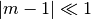
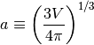
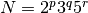

General Geometry Anomalous Diffraction Theory¶
Version: 1.1 Last updated: November 05, 2015
| Latest release: | ggadt-1.1.9.tar.gz |
|---|---|
| PDF: | Manual |
| Repository: | Github |
GGADT is short for General Geometry Anomalous Diffraction Theory. It is a Fortran 90 program that uses ADT (see [VDH1957]) to compute the differential scattering cross section (or the total cross sections as a function of energy) for a specified grain. ADT is valid when

(i.e. when the grain is optically thin), and when

here  is the wavenumber of the incident photons and
is the wavenumber of the incident photons and  is the effective radius of the grain, defined to be
is the effective radius of the grain, defined to be

For more information about GGADT and ADT, see [VDH1957], [HD2015], and [DA2006]. See Citing GGADT for how to cite GGADT in a publication.
If you would like to discuss GGADT in more detail, or offer ideas for additional features, head over to the GGADT Google Group.
This documentation is a work in progress – some sections may be incomplete. Please use the GGADT Google Group to voice anything you notice is lacking or unclear in the documentation.
GGADT results for two clusters of spheres with different porosities.
| [DA2006] | Draine, B. T., & Allaf-Akbari, K. 2006, ApJ, 652, 1318 |
| [HD2015] | Hoffman, J., & Draine, B. T. 2015, submitted for publication to the Astrophysical Journal |
| [VDH1957] | (1, 2) van de Hulst H., Light scattering by small particles, 1957, John Wiley & Sons, Inc., NY. |
| [T1992] | Temperton, C. 1992, A Generalized Prime Factor FFT Algorithm for Any , SIAM Journal of Scientific and Statistical Computing, 13, 676-686. |
Table of Contents¶